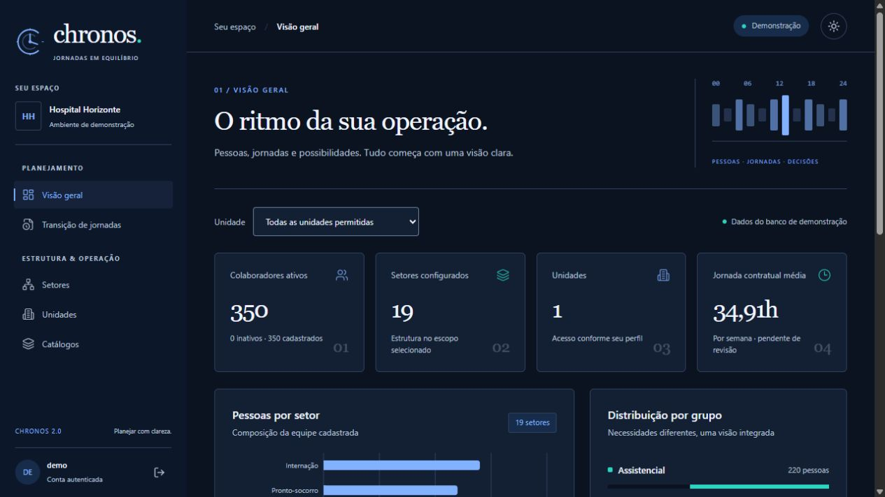

Uma estrutura que faz sentido
Unidades, setores, funções e competências configuráveis. O Hospital Horizonte demonstra uma operação com necessidades diferentes em cada área.
CHRONOS 2.0 / VERSÃO ATUAL PARA WINDOWS
Chronos 2.0 — Gestão Inteligente de Jornadas e Escalas.
Conheça a plataforma de planejamento de equipes: cadastros, dashboard, calendário, cenários, simulador financeiro, otimização de escalas e comparação da transição de jornadas. Baixe a versão 2.0 e explore os módulos com dados fictícios.
Projeto de Leandro Augusto Ferreira · Versão atual 2.0 · Demonstração local para Windows de 64 bits. O aplicativo inclui os módulos da plataforma e a nova comparação de jornadas. Não exige instalação de Python ou Node.js.
CONHEÇA A VERSÃO DISPONÍVEL
Esta é a interface do Chronos 2.0. A demonstração usa o Hospital Horizonte, com 350 colaboradores fictícios e 19 setores. O menu reúne os recursos disponíveis conforme o perfil de acesso.

PARA QUEM ESTÁ AVALIANDO
O cenário principal é o Hospital Horizonte, mas setores, cargos, turnos e regras são configuráveis para outros segmentos.
Unidades, setores, funções e competências configuráveis. O Hospital Horizonte demonstra uma operação com necessidades diferentes em cada área.
Contratos, qualificações e indisponibilidades ajudam a determinar quais profissionais podem assumir cada atividade.
Cenários versionados, projeções de custos e otimização permitem explorar hipóteses e revisar os resultados antes de aprovar uma proposta.
O QUE OBSERVAR NO PROJETO
React e TypeScript, temas claro e escuro, navegação por perfil e componentes compartilhados entre os módulos.
API FastAPI, SQLAlchemy, migrações Alembic, permissões por unidade e registros de auditoria. O executável usa SQLite local; a arquitetura também contempla PostgreSQL.
Projeção financeira com precisão decimal, OR-Tools para geração de propostas e processamento do otimizador separado da API.
Versões de cenários, origem das premissas e revisão humana. Uma modalidade de jornada cadastrada não se torna automaticamente válida para qualquer cargo.
EXPERIMENTE A VERSÃO ATUAL · CHRONOS 2.0
Baixe o executável, abra o arquivo e aguarde a janela indicar que está pronto. O Chronos abre no navegador e funciona no seu computador, sem instalação de Python ou Node.js.
Windows de 64 bits · Chronos 2.0 · Edição de demonstração · Executável sem assinatura digital
ACESSO DE CONSULTA INCLUÍDO
horizontedemoChronosDemo@2026Consulte dashboard, unidades, setores e catálogos. Para editar dados fictícios e testar os demais módulos, crie seu próprio administrador na janela do aplicativo.
MANUAL EM UMA ABA PRÓPRIA
Primeiro acesso, passeio de cinco minutos, criação do administrador e explicação dos módulos. Tudo em uma página com índice, leitura confortável e instruções diretas.
ATUALIZAÇÃO DO PROJETO · 25/11/2026
O Chronos 2.0 mantém os módulos de planejamento e acrescenta a comparação por data das etapas da EC 141/2026, com referência de 42 horas em dezembro de 2026 e 40 horas em dezembro de 2027. A análise preserva o salário mensal e destaca os regimes e instrumentos que exigem revisão.
Explore os exemplos da nova área e consulte as fontes e os critérios da comparação.
HISTÓRICO DO DESENVOLVIMENTO
A versão oferecida para experimentar é o Chronos 2.0. A 1.0 permanece como registro da etapa anterior, para comparar as funcionalidades e as decisões de desenvolvimento.
A base inicial reuniu cadastros, calendário, cenários, custos e otimização. A 2.0 mantém essa estrutura e acrescenta a comparação da transição de jornadas, o manual atualizado e a nova paleta visual, preservando o relógio original.
O código-fonte é uma alternativa para avaliação técnica. Seu uso exige a preparação do ambiente descrita na documentação incluída.
SHA-256 do executável: b38a17c60ac745524b51b3b891afae5a3686735aff21f17d673268459b4b56ce
Os dados são fictícios. Os resultados dependem dos cadastros, das premissas e das revisões aplicáveis. O aplicativo não certifica conformidade jurídica ou dimensionamento profissional e não representa uma liberação para produção hospitalar.
O núcleo funciona sem n8n. A integração n8n permanece desativada pela revisão de dependências. Os testes automatizados em navegador real passaram no GitHub Actions. A validação no Power BI Desktop e a homologação operacional continuam pendentes.